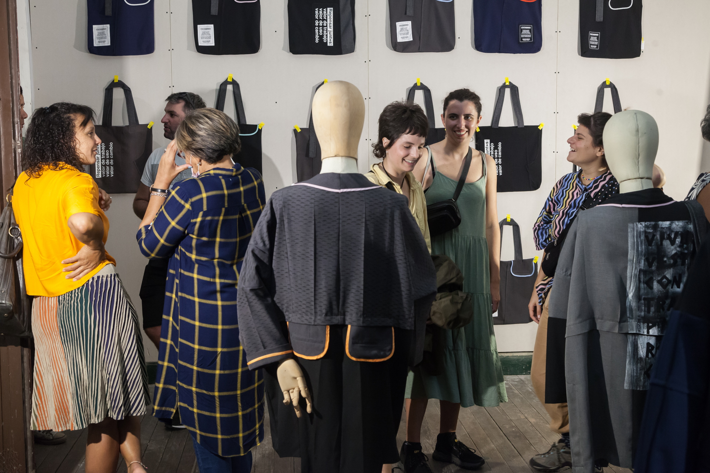
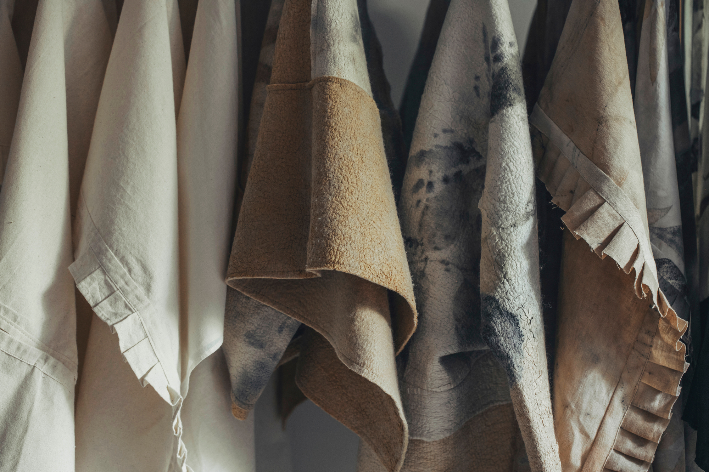
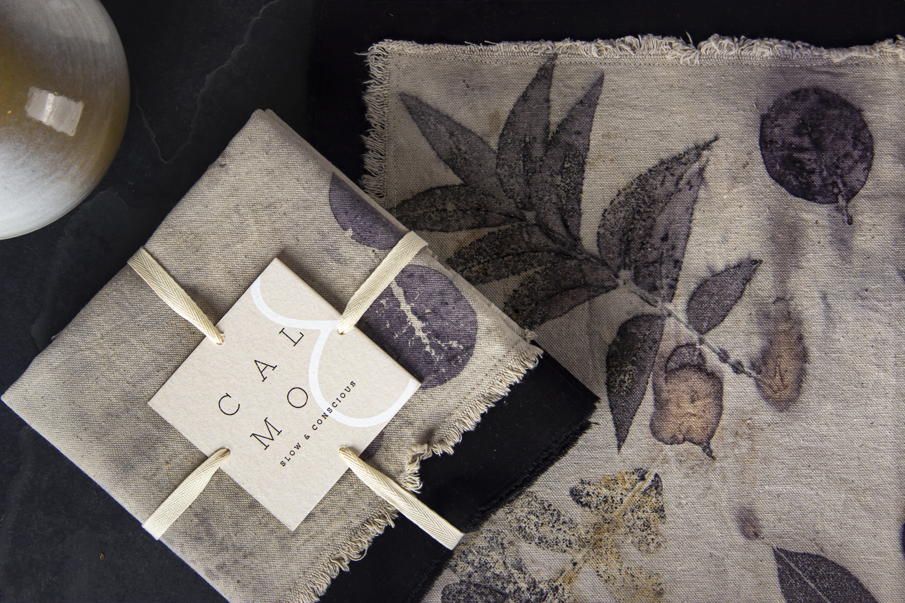
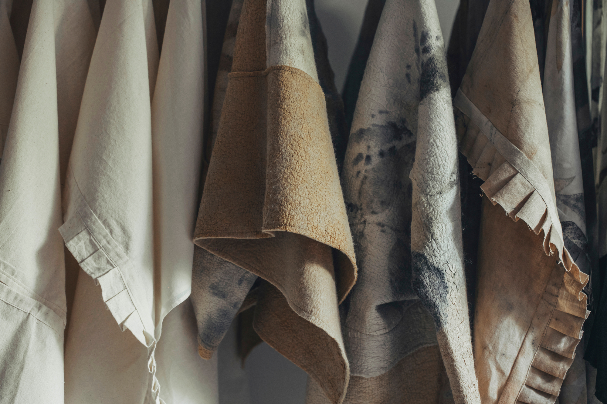
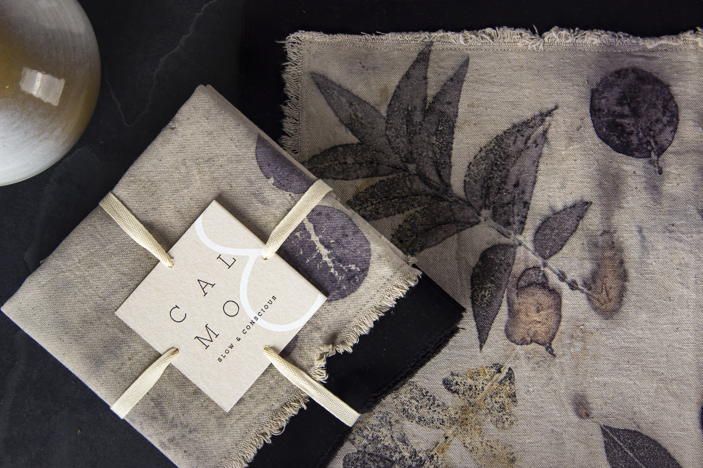

Asistente de diseño en Calmo, marca uruguaya de indumentaria y productos para el
hogar con impronta slow. Investigación de
tendencias,
desarrollo de productos, fichas técnicas y control de calidad. Soporte y mantenimiento en
e-commerce
(Shopify) y creación de contenidos para redes sociales.

Colaboradora en Proyecto CasaMario, colectivo autogestionado en torno a prácticas
artísticas. Participación en diferentes proyectos incluyendo actividades de diseño de vestuario,
residencias de upcycling, montaje de exposiciones, colaboración en publicaciones editoriales,
desarrollo de contenidos para redes sociales.
 
